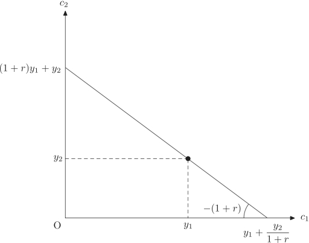
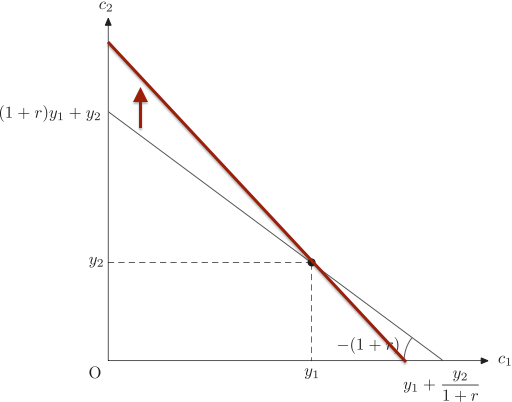

経済学で出る数学
ワークブックでじっくり攻める：応用問題
２期間消費モデル．【『経出る』練習問題6.5】
【問】 2期間消費モデルを考える．第１期の所得を $y_1$ ，第２期の所得を $y_2$，利子率を $r$ とする．第１期の消費額を $c_1$，第２期の消費額を $c_2$ として，生涯の予算制約式を求め，予算線を $c_1c_2$ 平面に図示しなさい．利子率が上昇すると，予算線はどのようになるかも説明しなさい．
【解答】
- 貯蓄を $s$ で表すと，第１期の予算制約は
\[
c_1+s=y_1\tag{1}
\]
第２期には利子がついて $(1+r)s$ になっているので，第２期の予算制約は
\[
c_2=y_2+(1+r)s\tag{2}
\]
(1)式から $s=y_1-c_1$ なので，(2)式に代入して $s$ を消去すると，$c_2=y_2+(1+r)(y_1-c_1)$ となる．これより，予算線はかならず $(y_1, y_2)$ を通ることがわかる．両辺を $(1+r)$ で割って，$c$ の項と $y$ の項に分ければ，
\[
c_1+\dfrac{c_2}{1+r}=y_1+\dfrac{y_2}{1+r}
\]
となり，$生涯消費の現在価値=生涯所得の現在価値$ という経済学的解釈を得る．また $c_1=0$ とすると縦軸切片が $(1+r)y_1+y_2$， $c_2=0$ とすると横軸切片が $y_1+\dfrac{y_2}{1+r}$ と求まる．さらにこれを変形すると，
\[
c_2-y_2=-(1+r)(c_1-y_1)
\]
とできる．したがって，かならず 点 $(y_1, y_2)$ を通ること，傾きが $-(1+r)$ であることがわかる．

- 利子率が上昇すると予算線の（負の）傾きが急になる．ただし予算線はかならず$(y_1, y_2)$ を通る．

【解答終】
【Further Reading】
江良亮＋森脇祥太『からだで覚える経済学』日本評論社（2013）
ふろく（２）応用問題 一覧へ